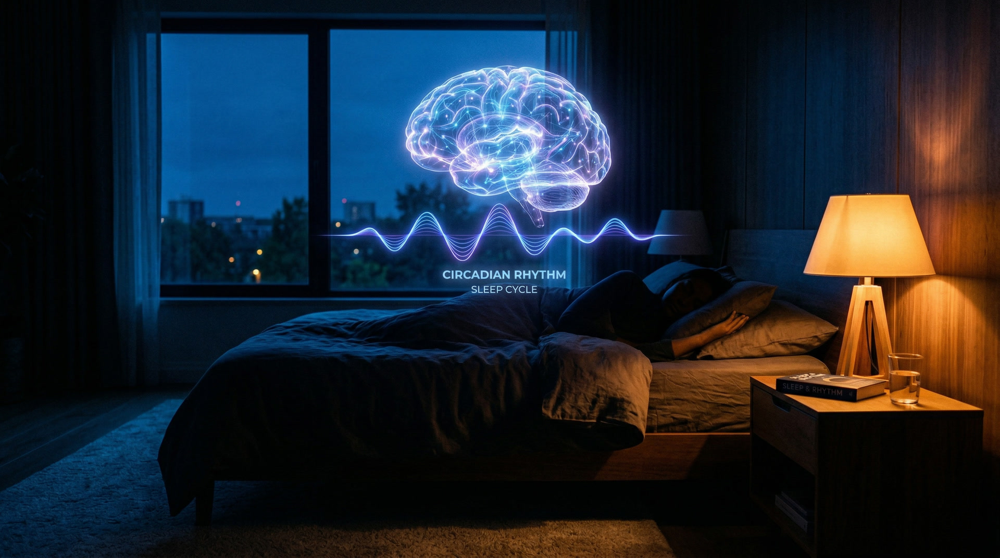

Course Highlights
What You'll Master
Five transformative domains — each grounded in peer-reviewed science, each made practical through hands-on experiments and real data.



A 12-session live online academy where you'll read your body's signals, interpret longevity research, and build a personal healthspan blueprint — guided by world-class experts, in a small group, grounded in science.
Why This Course Stands Apart
This isn't passive education. It's a structured, interactive experience built for real transformation — not content consumption.
Every session led by physicians, PhDs, and certified longevity coaches via live video. Ask questions in real time. Not pre-recorded, not AI-generated — real experts, live.
8–15 participants per cohort. Breakout rooms, peer coaching, and real discussion — not a webinar with 500 silent viewers. You'll know everyone by name.
Join from anywhere in the world. All you need is a webcam and internet connection. Sessions are designed for deep engagement across time zones.
Complete 12 sessions plus between-session assignments to earn your Longevity Health Reset certificate. A credential backed by real coursework, not just attendance.
Course Highlights
Five transformative domains — each grounded in peer-reviewed science, each made practical through hands-on experiments and real data.

Full Syllabus
Each 90-minute session builds on the last. Live instruction, group discussion, hands-on experiments, and between-session assignments that make the science stick.
Welcome + framing → Mini-lecture on the biology of aging → Guided personal reflection → Breakout group introductions → Group synthesis and discussion → Introduction to the "Longevity Lens" framework
Complete a 3-day lifestyle awareness log tracking energy, meals, sleep, movement, and mood patterns.
Review lifestyle logs → Visual walkthrough of glucose curves → Case comparisons (healthy vs. dysregulated) → Myth dismantling session → CGM preview and introduction
Complete a detailed food recall and energy crash mapping exercise — identify when you crash, what you ate, and how you felt.
Interactive lecture on nutrient responses → Meal deconstruction exercise → Group comparison of individual responses → Design your default meal framework
Try 1–2 meal adjustments based on your framework and document the results in your learning journal.
CGM fundamentals lecture → Walk through real anonymized datasets → Group interpretation exercises → CGM setup guidance for those using devices
Begin your CGM experiment or review provided anonymized datasets. Record observations about your own patterns.
Share CGM observations from the week → Facilitator-guided curve comparison → Design safe food experiments → Expectation-setting for realistic progress
Run individual food experiments — try different meal orders, compositions, and timings. Document results with CGM data or subjective energy tracking.
CGM examples with and without post-meal movement → Movement planning workshop → Peer review of individual plans → Commitment check-in
Run movement experiments with CGM tracking — compare glucose curves on days with and without post-meal walks or resistance training.
Overnight CGM data review → Sleep habit audit → Troubleshooting workshop for common sleep disruptors → Design your personal sleep experiment
Run your sleep experiment for one week — track bedtime, wake time, late eating, screen exposure, and overnight glucose patterns.
CGM stress spike examples → Guided nervous system regulation exercise → Personal trigger mapping → Design your regulation toolkit
Practice your chosen stress regulation technique daily. Note any glucose changes during stressful events vs. calm periods.
Supplement label teardown exercise → Wearable data obsession discussion → Practice applying the decision framework to real products → Group debate
Conduct a personal supplement audit — evaluate everything you currently take against the decision framework. Cut what doesn't pass.
Research review on social health and longevity → Values reflection exercise → Social habit design workshop → Accountability pairing
Complete a social connection inventory — map your relationships, identify gaps, and initiate one new or renewed connection this week.
Blueprint construction workshop → Peer coaching sessions (paired review) → Failure planning and obstacle pre-emption → Draft sharing and feedback
Complete your Personal Longevity Blueprint — a comprehensive document covering nutrition, movement, sleep, stress, social health, and monitoring systems.
Before/after reflections → CGM insights synthesis → Commitment statements → 90-day action plan construction → Graduation and celebration
Your completed Personal Longevity Blueprint + 90-Day Action Plan — two living documents that guide your healthspan journey beyond the course.
Is This For You?
Adults 35–65 who are curious about aging well — not just avoiding disease, but actively designing their healthspan.
People tired of generic health advice who want personalized, data-driven guidance grounded in real science.
Those willing to invest 90 minutes per week plus between-session experiments to create lasting change.
People who value live discussion and peer learning over passive video content and pre-recorded lectures.
You're seeking medical diagnosis or treatment — this is education and coaching, not clinical care.
You want a quick fix or a 30-day transformation promise. This is a 12-week deep dive, not a shortcut.
You prefer pre-recorded, self-paced content only. Every session here is live, interactive, and built on group dynamics.
Expert Faculty
Physicians, researchers, and certified longevity coaches who combine academic rigor with practical, real-world experience.
Lead Instructor & Longevity Educator
Founder of Longevity Science. Experienced in aging science workshops, glucose management, and lifestyle optimization. Leads longevity strategy programs and retreats across three continents.
Healthspan Coach
Physician and healthspan coaching specialist. Focuses on metabolic health, stress, sleep, and daily habits — grounded in longevity science, not expensive clinical interventions.
xLongevity Certified Coaches
Certified longevity coaches trained in age-related biology, lifestyle optimization, and behavior change. Specialists in translating complex science into daily practice you can sustain.
Proven Track Record
"I've taken dozens of online courses, but this was the first time I felt like I was in a real classroom. The live interaction, the small group size, and the expert instructors made all the difference. I actually changed my habits — not just learned about them."
"The CGM module was eye-opening. Seeing my glucose data in real time completely changed how I think about food. The instructors explained everything without jargon and the peer group kept me accountable. Worth every minute."
"I was skeptical about live online courses, but the platform and teaching quality exceeded my expectations. Having real-time Q&A with a physician about my metabolic data? You can't get that from a YouTube video. Highly recommend."
Got Questions?
No medical or scientific background required. You need a computer with a webcam, a stable internet connection, and genuine curiosity about your health. The course is designed for educated adults who want to understand the science, not for healthcare professionals (though they're welcome too). All technical concepts are explained from the ground up.
A CGM is recommended but not required. If you choose to use one, we'll guide you through setup and interpretation. If you prefer not to wear a sensor, we provide anonymized datasets for all exercises so you can still fully participate and learn the skills. Many participants find the CGM experience transformative, but the course is designed to work both ways.
Plan for approximately 3 hours per week: 90 minutes for the live session, plus 60–90 minutes for between-session work (experiments, journaling, and reflection). The between-session work is designed to fit into your daily life — you're adjusting real meals, walks, and sleep habits, not writing essays. Most participants find it integrates naturally once they start.
No. This is a health education course, not medical care. Our instructors include physicians and PhDs, but they're teaching you to understand your body — not diagnosing or treating conditions. The course is designed to complement your existing healthcare, not replace it. If you have specific medical concerns, we always recommend consulting your physician.
All sessions are recorded and made available within 24 hours. While we strongly encourage live attendance (the interactive elements are where the magic happens), we understand life gets in the way. You can watch the recording and still complete the between-session work. If you miss more than 2 sessions, we'll work with you on a catch-up plan to ensure you can still earn your certificate.
Each cohort has 8–15 participants. This isn't arbitrary — it's the optimal range for meaningful discussion, personalized attention, and peer accountability. Small enough that your instructor knows your name and your specific goals, large enough for diverse perspectives during breakout sessions. When a cohort fills up, the next one opens.
New cohorts launch regularly based on demand. Enter your email above to get notified when the next enrollment window opens — you'll receive the full pricing, schedule, and early-bird details before the public announcement. Early registrants receive priority placement and may be eligible for a founding member discount.
Yes. Upon completing all 12 sessions and the between-session assignments, you'll receive the Longevity Health Reset Certificate. This isn't a participation trophy — it represents genuine mastery of the material, completion of hands-on experiments, and delivery of your Personal Longevity Blueprint. It's a credential you earned through real work.
Start Your Journey
Join the next cohort. 12 sessions. Small group. Expert-led. The most structured, science-grounded longevity education you'll find.
Limited to 15 participants per cohort. Early registration recommended.